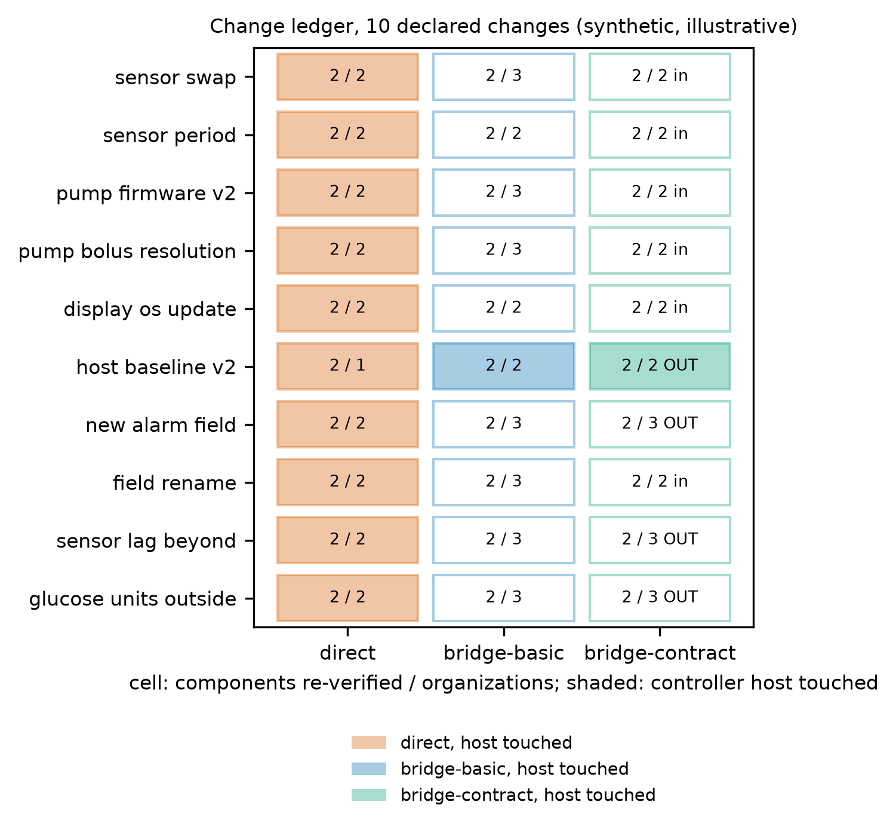

Experiments¶
Seven experiments demonstrate the structural argument. The fifth tests AI-proposed mappings; the sixth
and seventh run on the insulin-loop example (Insulin loop).
They are seeded and write CSV files,
and plots too when matplotlib is installed (uv sync --extra plots).
Synthetic, illustrative
Every number on this page and in the output files is synthetic and illustrative. The
experiments run on invented platforms with stated counting models. They show how the
two architectures behave in a structural argument. They are not program data and they
do not predict any real program's outcome. Each CSV starts with the line
# synthetic, illustrative.
Each experiment has a CLI command and a script that does the same thing:
uv run bridge-island experiment <topology|change-impact|timing|containment|ai-mapping> [--seed N] [--out DIR] [--example aviation|medical]
uv run bridge-island experiment <closed-loop|change-ledger> --example insulin-loop [--seed N] [--out DIR]
python experiments/topology_sweep.py # also: change_impact.py, timing_continuity.py, fault_containment.py,
# closed_loop.py, change_ledger.py
Output goes to DIR/<experiment>/ (default outputs/). The same seed gives byte-identical
files.
1. Topology sweep¶
uv run bridge-island experiment topology --seed 1
Sweeps the number of baseline elements n and unique subsystems m, with a configurable
dependency density (the chance that a given subsystem uses a given element), and counts
interfaces:
| Architecture | Interfaces |
|---|---|
| P2P | E, the number of dependency edges; worst case n * m |
| Bridge | n + m |
| Bridge, baseline side consolidated onto one interface | 1 + m |
Files: topology_sweep.csv, topology_sweep.png. For n = 40 and density 0.3 the run
gives (P2P column is the mean of 5 repeats):
| m | P2P (E) | P2P worst case | Bridge n + m |
Bridge 1 + m |
|---|---|---|---|---|
| 2 | 25.2 | 80 | 42 | 3 |
| 4 | 47.4 | 160 | 44 | 5 |
| 8 | 93.2 | 320 | 48 | 9 |
| 16 | 187.8 | 640 | 56 | 17 |
What n counts
In this repository n is the number of baseline data elements (fields of published
messages), and |E| counts element-level dependencies: one per (element, subsystem)
pair. It is not the number of baseline systems or units. A count at the level of systems
would be much smaller than these, so the numbers here are not comparable with counts taken
at another level.
At this density and size the Bridge does not win at every point. With 2 subsystems, point-to-point needs fewer interfaces than the Bridge's + m (25.2 against 42); with 4 they are close (47.4 against 44); from 8 up the Bridge is well below. Consolidating the baseline side (1 + m) is lower at every m. The crossover moves with and the density, which the CSV lets you explore.
Point-to-point grows with the product of the two sides, the Bridge with their sum. The count says nothing about how hard each interface is. The Bridge's interfaces are all concentrated in one component.
2. Change impact¶
uv run bridge-island experiment change-impact --seed 1 [--trials 1000]
Applies the v1 to v2 change set of the chosen example to both architectures and counts four
things. The counting model is stated in the module docstring of
bridge_island.analysis.change_impact. In short: every (element, subsystem) dependency has
one conformance test, located in whatever owns the adapter for that dependency, and every
subsystem has one acceptance test. The Bridge is re-verified after any baseline change.
Aviation, --seed 1:
| Metric | P2P | Bridge |
|---|---|---|
| Unique subsystems needing code change | 3 | 1 |
| Modules touched | 3 | 2 |
| Tests failing before the fix | 9 | 7 |
| Components needing re-verification | 3 | 2 |
The "tests failing" row rests on an arbitrary assumption: that each dependency has
exactly one conformance test (tests_per_edge = 1). Change that number and the row changes
with it, but the gap between the architectures does not, because it equals the number of P2P
subsystems with code changes minus the number of Bridge subsystems with code changes (3 - 1 = 2
here). The experiment writes the sensitivity to change_impact_sensitivity.csv:
| Tests per dependency | P2P tests failing | Bridge tests failing |
|---|---|---|
| 0 | 3 | 1 |
| 1 (the table above) | 9 | 7 |
| 2 | 15 | 13 |
| 5 | 33 | 31 |
Read the other three rows with the same caution: they follow from the counting model, not from measurement.
For the Bridge, the code change is the Translator Module's mapping, except for the removed element: the one subsystem that used it must also handle the "unavailable" report. The re-verified components are the Bridge itself plus that subsystem.
The Monte Carlo mode draws random architectures (10 to 100 elements, 3 to 20
subsystems, density 0.1 to 0.6) and random change sets (1 to 6 changes of the six kinds),
and reports distributions. With --seed 1 and 1000 trials, the mean [5th, 95th percentile]
is:
| Metric | P2P | Bridge |
|---|---|---|
| Subsystems needing code change | 6.0 [0, 15] | 2.0 [0, 9] |
| Modules touched | 6.0 [0, 15] | 2.9 [0, 10] |
| Tests failing before the fix | 14.9 [0, 42] | 10.9 [0, 35] |
| Components re-verified | 7.8 [1, 17] | 3.0 [1, 10] |
Files: change_set.csv, change_impact.csv, change_impact_monte_carlo.csv,
change_impact_distributions.csv, change_impact.png. The result depends on the counting
model. Read it as a demonstration of where change lands, and change the model if you
disagree with it.
3. Timing and continuity¶
uv run bridge-island experiment timing --seed 1
Stalls the Bridge for 1.5 s at t = 2.2 s, and runs the simulation twice: once with source time stamping (G3), once with the naive mode that stamps delivery time.
| Time tag | Max age of the held 1 Hz input | Flagged late by the consumer | Health events |
|---|---|---|---|
| source (G3) | about 0.7 s | 1 | bridge_stall, discontinuity |
| delivery (naive) | about 0 s | 0 | bridge_stall, discontinuity |
While the Bridge is stalled, its buffer keeps only the latest message of each kind. When the
Bridge resumes, a slow message that arrived mid-stall is released late. With source time the
consumer sees how old it is and can reject it. Stamped with delivery time, it looks brand
new, and the consumer cannot tell. In both runs the health monitor notices the gap in its
own heartbeat (bridge_stall) and the jump in source times (discontinuity), and
annunciates both to the affected subsystems, and consumers of fast data see the gap in the
source times they received.
Files: timing_ages.csv (every datum with source time, delivery time and age),
timing_summary.csv, timing.png.
4. Fault containment¶
uv run bridge-island experiment containment --seed 1
A unique subsystem sends a valid request, then four kinds of fault, on both architectures. The table is for the aviation example:
| Scenario | Bridge: baseline sees it? | P2P: baseline sees it? |
|---|---|---|
| valid message | accepted | accepted |
| out-of-range value | blocked by the Translator Module | caught by the subsystem's own adapter code |
| bad enum value | blocked by the Translator Module | caught by the subsystem's own adapter code |
| malformed (missing field) | blocked by the Translator Module | caught by the subsystem's own adapter code |
| unauthorized message type | blocked and logged by the cyber monitor | reaches the baseline, which rejects it |
| baseline-format message, out of range | blocked and logged by the cyber monitor | reaches the baseline, which rejects it |
On the Bridge the baseline's rejection count is zero in every scenario, and the Bridge's log records what it blocked and why. On P2P, a subsystem's own correct code stops the first three. When the subsystem's software is faulty, or sends something it should never send, the baseline has to deal with it directly.
File: containment.csv.
5. AI-proposed mappings¶
uv run bridge-island experiment ai-mapping --example aviation --provider replay --seed 1
uv run bridge-island experiment ai-mapping --example aviation --provider anthropic --model <model-id> --trials 10 --repairs 2 --variant plain,obfuscated,perturbed --perturbed-n 20
python experiments/ai_mapping.py # the same, from a script
Live runs send invented content to a third party
A live run (anthropic, openai) sends the invented interface descriptions in each prompt to
that provider's service. ollama talks to a model on your own machine. Nothing real is in the
prompts: see Contributing. API keys come only from the environment
variables ANTHROPIC_API_KEY and OPENAI_API_KEY and are never written anywhere. Install the
provider packages with uv sync --extra ai; replay needs none of them.
What it tests. One claim: an AI model can propose the Bridge's mapping for a new baseline version; the contract checks catch proposals that do not fit; and a person only needs to read the entries the model marks as uncertain. It measures how often that is true, including how often a wrong mapping gets through every check.
What the model gets. The old and new baseline interface, what each unique system declares it
needs and sends, the old mapping, the mapping file format and the list of transforms (generated
from the code that accepts them), and the rules (map every need once, translate only where
representations differ, mark a vanished element status: removed and do not guess a
substitute). It does not get the hand-written new mapping, the rename table or the change-set
notes; a test checks that none of them is in any prompt. It returns a complete mapping and, for
every entry, high, medium or low with a one-line reason.
The checks. The existing contract check, codegen.generate, accepts or rejects the mapping.
On a rejection the error text is sent back for up to --repairs rounds. An accepted mapping is
compared with the hand-written one by behaviour: for each input, the same test values (in
range, at the edges, just outside, every enumerated code) go through both chains, and a different
spelling of the same conversion counts as correct. For the plain variant a short system run is a
second check on the whole proposal.
Entry classes. Every hand-written entry ends up in one class:
| Class | Meaning |
|---|---|
correct |
accepted, same behaviour |
rejected_by_contract |
the proposal failed the contract check after the repairs ran out; the check stops at the first problem, so every entry of that proposal gets this class |
unparseable |
the reply was not a usable YAML mapping |
wrong_flagged |
accepted but behaves differently, marked low or medium |
wrong_unflagged |
accepted, behaves differently, marked high or not rated: the key safety number, because a reviewer who reads only flagged entries never sees it |
missing, extra |
no entry for an input or message field, or an entry for nothing the systems declare |
removed_handled, removed_guessed |
the removed element was marked removed, or a substitute was guessed |
Variants. plain is the example as written. obfuscated replaces every element, message and
input name by a neutral token (M03.F2), keeping units, encodings, frames and ranges, so a model
cannot score by recognising names. perturbed applies --perturbed-n seeded random change sets
(renames, unit and encoding changes, added, removed and re-rated elements) to the old interface
and derives the right answer from the old mapping plus the change set; the oracle scores 100% on
every case, which tests the derivation.
Controls, run every time:
oraclereturns the hand-written mapping and must score 100%: it tests the scorer.carry_forwardreturns the old mapping relabelled as the new one: "do nothing".heuristicis the non-AI baseline: keep the element if it still exists, otherwise take the most similar name, otherwise mark it removed; infer the unit and angle conversions from the two representations. It cannot recode an enumeration. If a model does not beat it, say so.
Replay. Replay is the default and the only mode used in tests and CI. A live run writes every
response to a cassette (experiments/ai_mapping/cassettes/<provider>__<model>.jsonl, keyed by a
hash of the prompt, model, settings and trial, holding no prompt text and no key), so anyone can
re-score offline and get identical numbers. A request whose prompt no longer matches a recording
is skipped with a warning, never guessed.
Reading the table. correct counts a handled removal as correct. contract-rej is the share
of entries in proposals the contract check rejected. unflagged-wrong is the share of entries
that were wrong, accepted and not flagged. review is the share of proposed entries marked low or
medium, which is what a reviewer would read. escape is the share of the wrong accepted entries
that such a reviewer would miss. The summary CSV gives each with a seeded 95% bootstrap interval
over trials.
The controls, in replay mode with seed 1 and 20 perturbed cases (correct / rejected by the contract check, per cent of entries):
| Control | Variant | aviation | medical |
|---|---|---|---|
| oracle | plain, obfuscated, perturbed | 100.0 / 0.0 | 100.0 / 0.0 |
| carry_forward | plain, obfuscated | 0.0 / 100.0 | 0.0 / 100.0 |
| carry_forward | perturbed | 30.0 / 70.0 | 30.0 / 70.0 |
| heuristic | plain | 100.0 / 0.0 | 0.0 / 100.0 |
| heuristic | obfuscated | 0.0 / 100.0 | 0.0 / 100.0 |
| heuristic | perturbed | 100.0 / 0.0 | 90.0 / 10.0 |
Read these with care. The heuristic is perfect on the plain aviation change because the change is easy (a rename of one word, two unit changes, one removal). It fails the medical change because it cannot recode the alarm enumeration, and it fails every obfuscated case because names no longer match. On the perturbed cases it does well because the derived answers use the same inference it does, so a model is not expected to beat it on pure unit changes there.
Limitations. Two invented examples with small mappings. Results depend on the model, its version and the prompt, and temperature 0 does not make a hosted model deterministic, so a fresh live run can differ from a cassette. The contract check stops at the first problem, so per-entry rates for rejected proposals are coarse. The medical example needs an interface note to say which names an enumerated element can hold, because the interface description lists only the encoding. This shows a mechanism; it does not show that a model is fit for real certification work.
Files: ai_mapping_trials.csv (one row per trial), ai_mapping_entries.csv (one row per entry per
trial, with class, confidence and reason), ai_mapping_summary.csv, ai_mapping.png (stacked
bars of the entry classes, when matplotlib is installed).
6. Closed loop¶
Question. In the insulin loop, across ten scenarios, does a runtime contract monitor at the Bridge detect boundary failures that direct integration misses? And what does the Bridge cost?
Method. Every scenario was run on the 30 virtual patients and the three architectures (direct, bridge-basic, bridge-contract): 900 simulated days. Each architecture got the same patients, meals, seeds and faults. Results are counts, and medians with the 5th to 95th percentile across the cohort. There are no p-values and no claim of clinical significance. With 4 worker processes, the full matrix ran in 66 s on the author's laptop, which was also running other heavy work.
uv run bridge-island experiment closed-loop --example insulin-loop --seed 1
| Scenario | Architecture | Minutes in 70-180 mg/dL, median [p5, p95] | Patients below 54 | Told: patients, time median [p5, p95] | Patients acting on unflagged stale glucose | Unit or encoding errors through | Alarms late / lost |
|---|---|---|---|---|---|---|---|
| nominal | direct | 1278 [1149, 1440] | 0 | no fault | 0 | 0 | 0 / 0 |
| nominal | bridge-basic | 1278 [1149, 1440] | 0 | no fault | 0 | 0 | 0 / 0 |
| nominal | bridge-contract | 1278 [1149, 1440] | 0 | no fault | 0 | 0 | 0 / 0 |
| sensor_swap_units | direct | 1277 [1117, 1440] | 0 | 30 of 30, 1800 [1800, 1800] s | 30 | 0 | 0 / 0 |
| sensor_swap_units | bridge-basic | 1277 [1157, 1440] | 0 | 0 of 30 | 0 | 0 | 0 / 0 |
| sensor_swap_units | bridge-contract | 1277 [1157, 1440] | 0 | 0 of 30 | 0 | 0 | 0 / 0 |
| sensor_dropout | direct | 1277 [1147, 1440] | 0 | 30 of 30, 1860 [1800, 2040] s | 30 | 0 | 0 / 1 |
| sensor_dropout | bridge-basic | 1277 [1147, 1440] | 0 | 30 of 30, 1860 [1800, 2040] s | 30 | 0 | 0 / 1 |
| sensor_dropout | bridge-contract | 1277 [1147, 1440] | 0 | 30 of 30, 360 [300, 540] s | 0 | 0 | 0 / 1 |
| stale_burst | direct | 1278 [1149, 1440] | 0 | 10 of 30, 1800 [1800, 1800] s | 30 | 0 | 0 / 0 |
| stale_burst | bridge-basic | 1278 [1149, 1440] | 0 | 10 of 30, 1800 [1800, 1800] s | 30 | 0 | 0 / 0 |
| stale_burst | bridge-contract | 1278 [1149, 1440] | 0 | 30 of 30, 360 [300, 540] s | 0 | 0 | 0 / 0 |
| pump_fw_v2 | direct | 882 [689, 1147] | 0 | 30 of 30, 1800 [1800, 1800] s | 0 | 5760 | 0 / 0 |
| pump_fw_v2 | bridge-basic | 1279 [1149, 1440] | 0 | 0 of 30 | 0 | 0 | 0 / 0 |
| pump_fw_v2 | bridge-contract | 1279 [1149, 1440] | 0 | 0 of 30 | 0 | 0 | 0 / 0 |
| pump_silent | direct | 1278 [1149, 1440] | 0 | 30 of 30, 1860 [1800, 2040] s | 0 | 0 | 0 / 0 |
| pump_silent | bridge-basic | 1278 [1149, 1440] | 0 | 30 of 30, 1860 [1800, 2040] s | 0 | 0 | 0 / 0 |
| pump_silent | bridge-contract | 1278 [1149, 1440] | 0 | 30 of 30, 480 [420, 660] s | 0 | 0 | 0 / 0 |
| out_of_range | direct | 1278 [1149, 1440] | 0 | 0 of 30 | 30 | 0 | 0 / 0 |
| out_of_range | bridge-basic | 1278 [1149, 1440] | 0 | 0 of 30 | 30 | 0 | 0 / 0 |
| out_of_range | bridge-contract | 1278 [1149, 1440] | 0 | 30 of 30, 77 [17, 257] s | 0 | 0 | 0 / 0 |
| replayed_command | direct | 1260 [1076, 1399] | 6 | 0 of 30 | 0 | 0 | 0 / 0 |
| replayed_command | bridge-basic | 1260 [1076, 1397] | 6 | 0 of 30 | 0 | 0 | 0 / 0 |
| replayed_command | bridge-contract | 1278 [1149, 1440] | 0 | 30 of 30, 0 [0, 0] s | 0 | 0 | 0 / 0 |
| display_throttle | direct | 1311 [1101, 1418] | 2 | 0 of 30 | 0 | 0 | 15 / 0 |
| display_throttle | bridge-basic | 1311 [1101, 1418] | 2 | 0 of 30 | 0 | 0 | 15 / 0 |
| display_throttle | bridge-contract | 1311 [1101, 1418] | 2 | 0 of 30 | 0 | 0 | 27 / 0 |
| bridge_stall | direct | 1278 [1149, 1440] | 0 | 0 of 30 | 0 | 0 | 0 / 0 |
| bridge_stall | bridge-basic | 1278 [1149, 1440] | 0 | 30 of 30, 1200 [1200, 1200] s | 30 | 0 | 0 / 0 |
| bridge_stall | bridge-contract | 1278 [1149, 1440] | 0 | 30 of 30, 1200 [1200, 1200] s | 30 | 0 | 0 / 0 |
Bridge costs:
| Architecture | Controller to pump (s), nominal | Sensor to controller (s), nominal | Unneeded fail-safe minutes, nominal (median) | Device paths dead in a 20-min stall (median) | Unflagged stale-glucose minutes in the stall |
|---|---|---|---|---|---|
| direct | 0 [0, 0] | 13 [13, 13] | 0.0 | 0 | 0 [0, 0] |
| bridge-basic | 30 [30, 30] | 13 [13, 13] | 0.0 | 3 | 15 [15, 15] |
| bridge-contract | 30 [30, 30] | 13 [13, 13] | 0.0 | 3 | 10 [10, 15] |
Reading. On the nominal day the three architectures are indistinguishable. The contract monitor changes three things:
- how soon the controller is told about stale, missing or bad glucose;
- whether it acts on such glucose without a flag;
- whether a replayed command goes through.
The Bridge's mapping, not the contract, absorbs the two device changes that a stale direct adapter gets wrong. The Bridge loses the stall scenario. The display-throttle scenario is not fixed by any architecture.
Files:
closed_loop_runs.csv, one row per run;closed_loop_summary.csv;critical_events_<scenario>.csv(bridge-contract runs);- figures 1 to 4 and 6, copied to
docs/images/insulin-loop/by the script.
7. Change ledger¶
Question. For ten declared changes, how many components change code, how many are re-verified, how many organizations sign off, and is the change inside a pre-declared envelope?
Counting model (stated assumptions in analysis/change_impact.py, not measurements):
- A device change always changes the device.
- A change to what a value means needs integration code: the host's adapter in direct (by default the adapters live in the host), and the mapping on the Bridge.
- A timing-only change needs no code, but whatever holds the integration is re-verified.
- bridge-basic has no envelope, so the host owner also signs a change to what a value means. bridge-contract involves the owners the envelope check names.
- Tests to re-run are the whole conformance suite, except inside the envelope, where only the listed tests run.
uv run bridge-island experiment change-ledger --example insulin-loop
uv run bridge-island envelope check examples/insulin_loop_invented/changes/01_sensor_swap.yaml --example insulin-loop
uv run bridge-island envelope verify --example insulin-loop
| Change | direct: code / re-verify / orgs / tests | bridge-basic: code / re-verify / orgs / tests | bridge-contract: code / re-verify / orgs / tests |
|---|---|---|---|
| 01_sensor_swap | 2 / 2 / 2 / 49, host touched | 2 / 2 / 3 / 49 | 2 / 2 / 2 / 14, inside |
| 02_sensor_period | 1 / 2 / 2 / 49, host touched | 1 / 2 / 2 / 49 | 1 / 2 / 2 / 14, inside |
| 03_pump_firmware_v2 | 2 / 2 / 2 / 49, host touched | 2 / 2 / 3 / 49 | 2 / 2 / 2 / 30, inside |
| 04_pump_bolus_resolution | 2 / 2 / 2 / 49, host touched | 2 / 2 / 3 / 49 | 2 / 2 / 2 / 30, inside |
| 05_display_os_update | 1 / 2 / 2 / 49, host touched | 1 / 2 / 2 / 49 | 1 / 2 / 2 / 8, inside |
| 06_host_baseline_v2 | 2 / 2 / 1 / 49, host touched | 2 / 2 / 2 / 49, host touched | 2 / 2 / 2 / 49, outside, host touched |
| 07_new_alarm_field | 2 / 2 / 2 / 49, host touched | 2 / 2 / 3 / 49 | 2 / 2 / 3 / 49, outside |
| 08_field_rename | 2 / 2 / 2 / 49, host touched | 2 / 2 / 3 / 49 | 2 / 2 / 2 / 14, inside |
| 09_sensor_lag_beyond | 2 / 2 / 2 / 49, host touched | 2 / 2 / 3 / 49 | 2 / 2 / 3 / 49, outside |
| 10_glucose_units_outside | 2 / 2 / 2 / 49, host touched | 2 / 2 / 3 / 49 | 2 / 2 / 3 / 49, outside |
Envelope decisions:
| Change | Envelope | Conformance tests to re-run | Organizations to involve |
|---|---|---|---|
| 01_sensor_swap | inside | 14 | Integrator Org (invented); Sensor Maker B (invented) |
| 02_sensor_period | inside | 14 | Integrator Org (invented); Sensor Maker A (invented) |
| 03_pump_firmware_v2 | inside | 30 | Integrator Org (invented); Pump Maker Org (invented) |
| 04_pump_bolus_resolution | inside | 30 | Integrator Org (invented); Pump Maker Org (invented) |
| 05_display_os_update | inside | 8 | Integrator Org (invented); App Maker Org (invented) |
| 06_host_baseline_v2 | outside | - | Host Maker Org (invented); Integrator Org (invented) |
| 07_new_alarm_field | outside | - | Host Maker Org (invented); Integrator Org (invented); App Maker Org (invented) |
| 08_field_rename | inside | 14 | Integrator Org (invented); Sensor Maker A (invented) |
| 09_sensor_lag_beyond | outside | - | Integrator Org (invented); Host Maker Org (invented); Sensor Maker B (invented) |
| 10_glucose_units_outside | outside | - | Integrator Org (invented); Host Maker Org (invented); Sensor Maker B (invented) |

Reading. The counts barely move between architectures. What moves is where the work lands:
- direct: every peripheral change touches the cleared controller host;
- bridge-basic: the host's code is untouched, but without an envelope its owner still has to sign;
- bridge-contract: inside the envelope, only the integrator and the device maker are involved, and only the listed conformance tests are re-run.
Outside the envelope, the check names who must review and why. A change to the host's own interface touches the host in every architecture.
Sensitivity. change_ledger_sensitivity.csv repeats the direct case with the adapters living in
the devices instead of the host. The host is then untouched in direct too, and the remaining
difference is the envelope and its conformance tests.
The FDA's draft guidance on predetermined change control plans (August 22, 2024) describes, in its sample plan, adding a wireless card and upgrading the operating system on a patient monitor. An envelope of declared peripheral changes, each with generated conformance tests, is consistent with how such a plan is described. Nothing here computes a regulatory outcome.